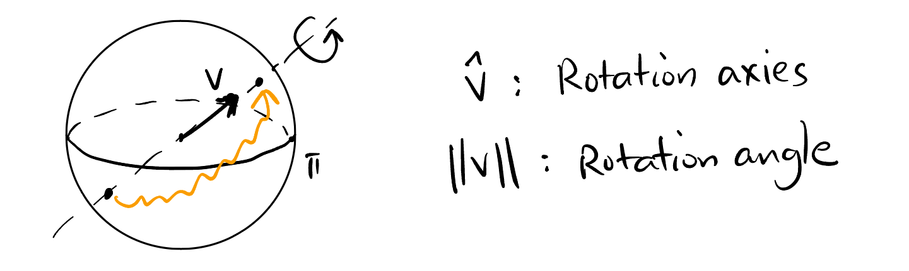
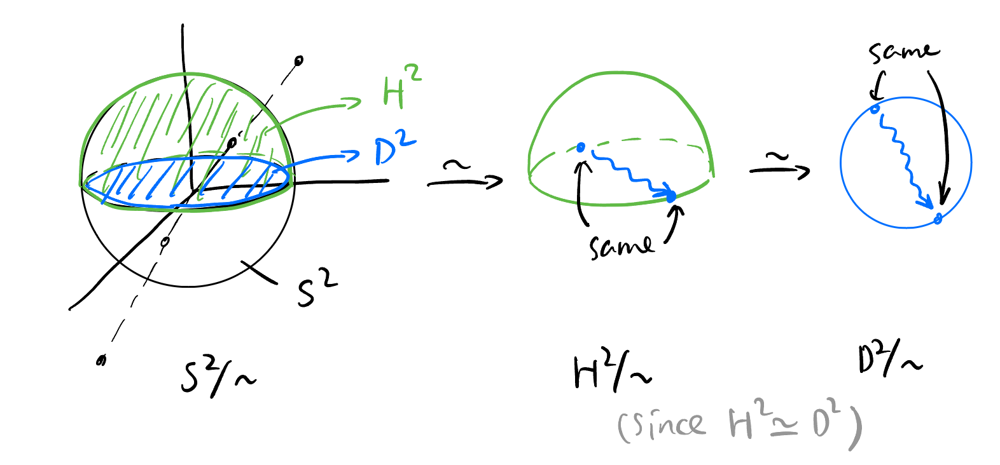

Quadrocopter Control
Basic Rigid Body Dynamics
Attitude Representation
One attitude of a quadrocopter can be represented by either an \(R \in SO(3)\) or two quaternions \(\pm q \in U(\mathbb{H})\).
Every possible attitude of a quadrocopter corresponds an element in \(SO(3)\) uniquely. We also know that the space of unit quaternions \(U(\mathbb{H})\) double covers \(SO(3)\): \[ U(\mathbb{H}) \overset{2:1} \twoheadrightarrow SO(3). \tag{1}\]
This means one rotation can also be expressed by two different unit quaternions, \(q\) and \(-q\).
A rotation around an axies \(\mathbf{v} \in \mathbb{S}^2\) by an angle \(\theta\) can be represented by a quaternion \(q\): \[ q = \cos\left(\frac{\theta}{2}\right) + \sin\left(\frac{\theta}{2}\right) \mathbf{v}. \]
Therefore, \(\forall q \in U(\mathbb{H})\), \[ \begin{aligned} q &= q_0 + q_1 \mathbf{i} + q_2 \mathbf{j} + q_3 \mathbf{k} \\ &\equiv q_0 + \mathbf{u} \\ &= \underbrace{q_0}_{\cos \frac{\theta}{2}} + \underbrace{\lVert\mathbf{u}\rVert}_{\sin \frac{\theta}{2}} \cdot \underbrace{\frac{1}{\lVert\mathbf{u}\rVert} (q_1 \mathbf{i} + q_2 \mathbf{j} + q_3 \mathbf{k})}_{\text{rotation axies}}. \end{aligned} \] i.e., the imaginary part of \(q\) encodes the rotation axis and the real part encodes the rotation angle.
Compare this with how the angular velocity vector \(\boldsymbol{\Omega}\) encodes the rotation information: Figure 3.
We will approach Equation 1 from the following simple steps:
Mental picture for the manifold \(SO(3)\): Three dimensional solid ball modulo the antipodal points on its surface: \[ SO(3) \simeq D^3/\sim \]
Figure 1: Every point on \(D^3/\sim\) represent a rotation Unit quaternions sits bijectively on the 3-sphere \(S^3\): \[ U(\mathbb{H}) \simeq \mathbb{S}^3. \]
This is easy to see from the definition of unit quaternions: \[ \begin{aligned} U(\mathbb{H}) &:= \{ q \in \mathbb{H} : |q| = 1 \} \\ &\simeq \{ (a, b, c, d) \in \mathbb{R}^4 : a^2 + b^2 + c^2 + d^2 = 1 \} \\ &=: \mathbb{S}^3 \end{aligned} \] where \(q = a + b\mathbf{i} + c \mathbf{j} + d \mathbf{k}\).
Natural double cover projection from sphere to the equator plate: \[ \mathbb{S}^3 \overset{2:1} \twoheadrightarrow \frac{\mathbb{S}^3}{\sim} \simeq \frac{D^3}{\sim}. \]
Just have a look at 2-dimensional case:
Figure 2: 2-dimensional case of the natural double covering From the above, we derived Equation 1.
Kinematics of rigid body: Quaternions version
The time evolution of the attitude of a quadrocopter \(q(t)\) and the angular velocity vector1 \(\boldsymbol{\Omega}(t)\) satisfy2: \[\dot{q} = \frac{1}{2} q \cdot \Omega. \tag{2}\]
1 The angular velocity vector (shown in Figure 3) \(\boldsymbol{\Omega}(t_1) \in \mathbb{R}^3\) encodes the rotation axis (\(\boldsymbol{\hat{\Omega}}\)) and the angular velocity around that axis (\(\lVert\boldsymbol{\Omega}\rVert\)).
2 You may be confused by how a quaternion could multiplied with a vector. It’s just because every vector \(v = v^1 \mathbf{i} + v^2 \mathbf{j} + v^3 \mathbf{k} \in \mathbb{R}^3\) naturally embedded into \(\mathbb{H}\) by a map \(p: \mathbb{R}^3 \to \mathbb{H}\), \(p(v) := 0 + v^1 \mathbf{i} + v^2 \mathbf{j} + v^3 \mathbf{k}\). Equation 2 is actually \(\dot{q} = \frac{1}{2} q \cdot p(\boldsymbol{\Omega})\).
In other words, the attitude \(q(t)\) of a quadrocopter can be represented as a path in \(D^3 / \sim\) (shown in Figure 4), how to know the angular velocity vector \(\mathbf{\Omega}(t)\) at a time \(t_0\)? Equation 2 tells us just take the tangent vector (actually a quaternion \(\dot{q}\)) of the path at time \(t_0\), multiplied by 2 then divide by \(q\).
If both the attitude of the quadrocopter and the angular velocity vector is given at time \(t\), then the attitude configuration at time \(t + \Delta t\) can be determined and can be considered as the composition of two consecutive rotations:
- First, rotate the quadrocopter by \(q(t)\).
- Second, rotate the quadrocopter by a quaternion \(r(t)\) defined by \(\boldsymbol{\Omega}(t)\) and \(\Delta t\), which represents a small rotation (where \(\Delta \theta\) is a small angle around the axis \(\hat{\Omega}(t)\)): \[ \begin{aligned} r(t) &= \cos\left(\frac{\Delta \theta}{2}\right) + \sin\left(\frac{\Delta \theta}{2}\right) \hat{\Omega}(t) \\ &= \cos\left(\frac{\lVert\boldsymbol{\Omega}(t)\rVert \Delta t}{2}\right) + \sin\left(\frac{\lVert\boldsymbol{\Omega}(t)\rVert \Delta t}{2}\right) \hat{\Omega}(t). \end{aligned} \]
Therefore, the attitude at time \(t + \Delta t\) can be expressed as3: \[ \begin{align*} &\begin{aligned} q(t + \Delta t) &= q(t) \cdot r(t) \\ &= q(t) \cdot \left( \cos\left(\frac{\lVert\boldsymbol{\Omega}(t)\rVert \Delta t}{2}\right) + \sin\left(\frac{\lVert\boldsymbol{\Omega}(t)\rVert \Delta t}{2}\right) \hat{\Omega}(t) \right) \\ &= q(t) \cdot \left( 1 + \frac{\lVert\boldsymbol{\Omega}(t)\rVert \Delta t}{2} \frac{\Omega(t)}{\lVert\boldsymbol{\Omega}(t)\rVert} \right) + o(\Delta t) \quad \text{(First order approximation)} \end{aligned} \\ \implies\quad & \frac{q(t + \Delta t) - q(t)}{\Delta t} \approx \frac{1}{2} q(t) \cdot \Omega(t) \\ \implies\quad & \dot{q}(t) = \frac{1}{2} q(t) \cdot \Omega(t). \end{align*} \]
We are done!
3 In this post, \(q \cdot p\) reads from left to right, i.e., \(q\) is rotated first and then \(p\).
Q1: The attitude of the quadrocopter can be represented by two quaternions \(\pm q \in U(\mathbb{H})\), but there’s only one possible \(\mathbf{\Omega}(t)\) at a given time. Why?
A1: Both \(q\) and \(-q\) satisfy Equation 2 with the same \(\mathbf{\Omega}(t)\): \[ \begin{aligned} \frac{\mathrm{d}}{\mathrm{d} t} q &= \frac{1}{2} q \cdot \Omega \\ \frac{\mathrm{d}}{\mathrm{d} t} (-q) &= \frac{1}{2} (-q) \cdot \Omega \end{aligned} \]
Q2: Given any path4 \(q(t)\) in \(D^3/\sim\), the angular velocity vector can be computed by: \[ \Omega = 2 \frac{\dot{q}}{q}. \] Does this result \(\Omega\) guaranteed to be purely imaginary? (Because angular velocity vector must be purely imaginary).
A2: Yes. We give the following theorems first:
Remember \(q(t)\) also lives on the surface \(\mathbb{S}^3\), so: \[ \frac{\dot{q}}{q} = \dot{q} \bar{q}. \]
Since \(\dot{q}(t)\) is a tangent vector to the surface \(\mathbb{S}^3\), \(\dot{q} \perp q\) as vectors in \(\mathbb{R}^4\), i.e., \[ \langle \dot{q}, q \rangle = 0. \] By Theorem 2, \[ \langle \dot{q}, q \rangle = \Re (\dot{q} \cdot \bar{q}) = 0, \] i.e., \[ \Re (\Omega) = 0. \]
So \(\Omega\) is purely imaginary. Done!
4 Any path in \(D^3/\sim\) is a legitimate attitude change of the quadrocopter.